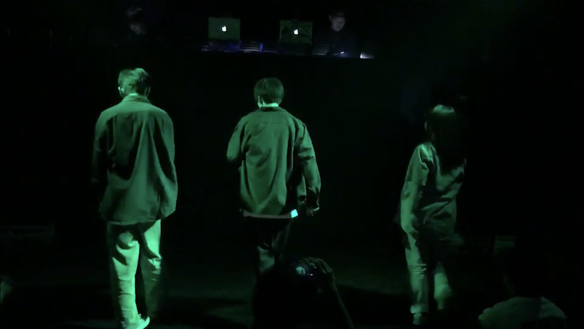
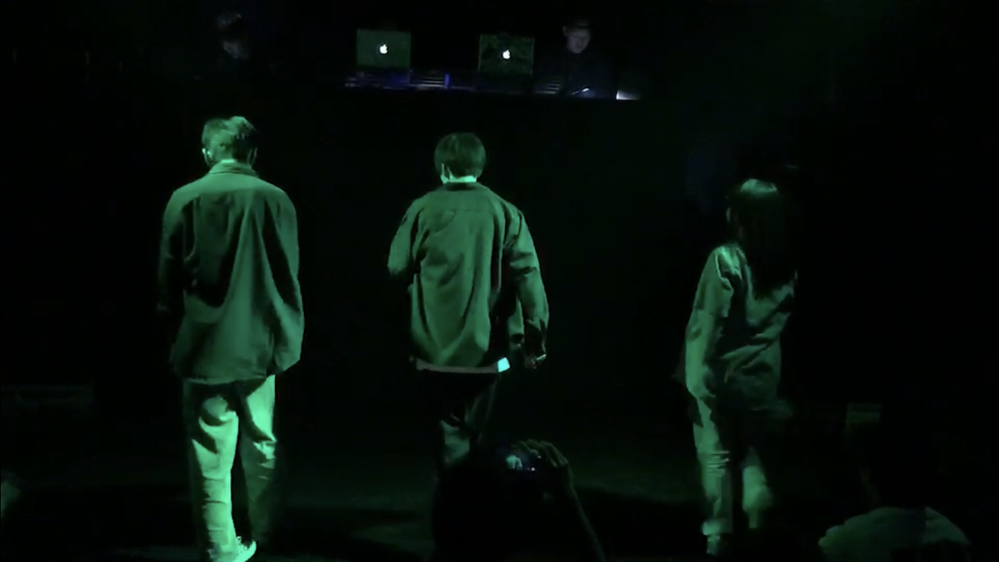

基本情報
名前:山口翼
情報学部行動情報学科二年
誕生日 2000年10月20日
出身地:愛媛県
所属しているサークル：モダンダンス部 Cue-FM
愛媛県についてはこちらから！
所属している部活
部活はモダンダンス部に所属しています。もともと後述する通り踊るアーティストが好きだったためこの部活に所属した。
この部活には５つのジャンルがある。House,Lock,Break,Jazz,Hiphopの5つである。
活動内容は毎週火曜日と金曜日の放課後に生協会館2階の談話室で練習しています。
主なイベントとしては2か月に一度の定期的なShowcase披露の場、1年に一度の静岡文化芸術大学ダンス部(ymnb,URR)との合同イベント、
BBQや夏合宿等のイベントがあります。
 

好きなアーティスト
三代目 J SOUL BROTHERS
三代目 J SOUL
BROTHERSは7人組のダンス＆ボーカルグループです。2011年にデビューして2014年にR.Y.U.S.E.I.でヒットしました。
ダンスがとてもかっこよく若い女性をメインに幅広い層から支持を受けています。
本来ならば今年もドームツアーを行う予定でしたが、新型コロナウイルスの影響で中止になってしまいました。
本当は今日ナゴヤドームでライブに行けるはずでした。悲しい...
HPはこちらから
ヨルシカ
ボカロPとしても活動しているn-bunaが、過去のワンマンライブにゲストボーカルとして参加したsuisと共に2017年に結成しました。
ボカロとは違った人間的な表現を形にするためにできたグループで、ヨルシカ自体も一つの作品であるとしています。
なお、「先入観で音楽を聴いてほしくない」とのコンセプトから、2020年6月現在2人の顔や詳細なプロフィールは公開されていない。
曲にストーリー性があったり、メッセージ性が強い物も多くあり10代を中心に人気を博しています。
公式HPはこちらから！
sumika
sumikaは4人組の日本のロックバンドで、ベースがいないためライブ毎にサポートメンバーを読んで演奏しています。
ロックとポップが融合したような音楽を作り出しています。ここ数年で、映画のタイアップも増え、
今年もアリーナツアーを開催する予定でした。
高校三年生の1月に受かったら6月末大阪でライブに行こ！と友人に誘われ無事二人とも合格できたためライブに参加した。
ファンと演者の一体感がすごくとても楽しかった。
公式HPはこちらから！